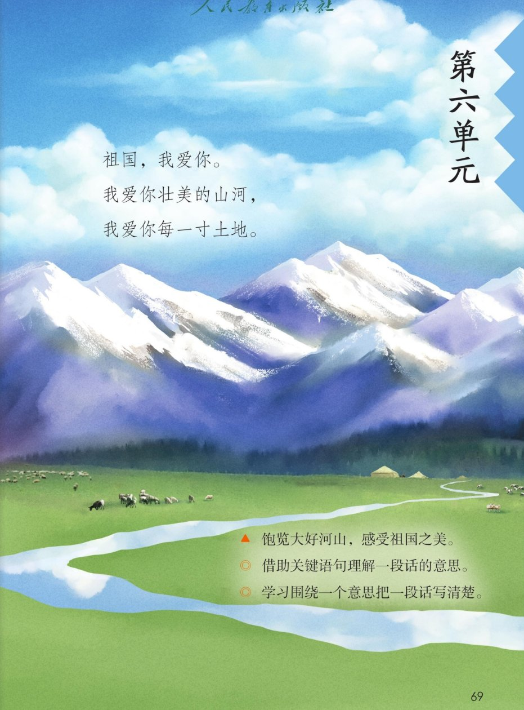
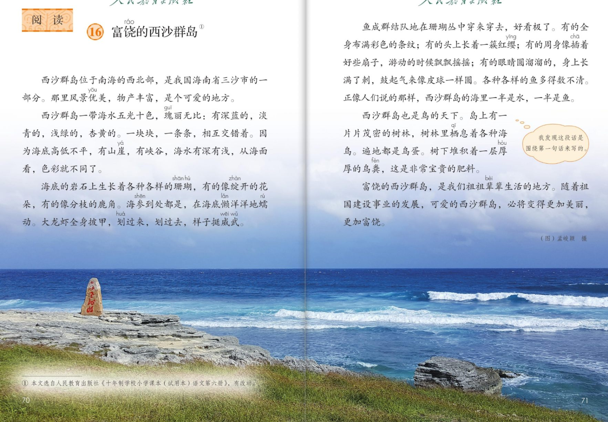
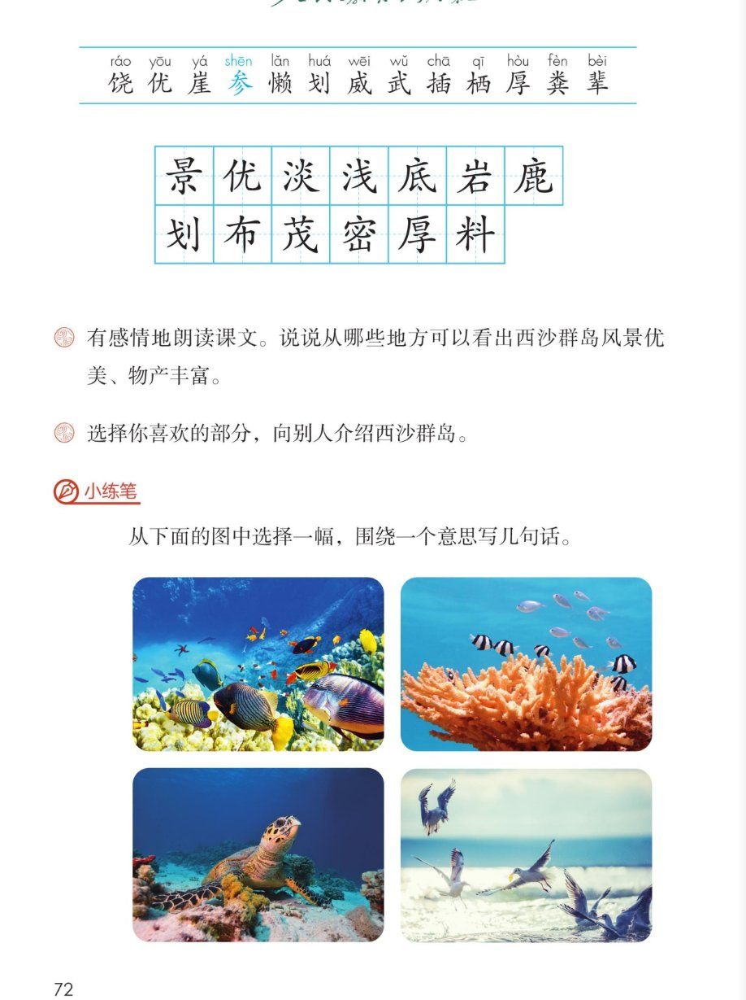

×
🔊 手机听不到声音怎么办？
① 先把手机
媒体音量调大 ，确认没开静音、没连蓝牙耳机；在微信里打开的，点右上角「⋯ → 用浏览器打开」。
② 还是没声音？到应用商店免费下载
Microsoft Edge 浏览器 （它自带朗读发声），用它打开本页面就能出声。
③ 换了 Edge 仍然没声音，说明这部手机的
硬件/系统不支持 网页朗读（多为老旧机型）；近几年买的新手机一般都能正常播放。
→ 打开声音自检
🌊 第 16 课《富饶的西沙群岛》· 有声图文带读
统编版语文 · 第六单元·阅读 · 课本 P69~72 · 素养升级版（对标 2022 课标第二学段）
课文 6 个自然段
素养目标 4
会认字 13
会写字 13
听写词 12
关键语句探究 6 卡
深入理解 8 题
本课本领 找关键句·围绕它写
🎧 这样学（可随时点任意一句、一个字、一个词单独听）： ① 听读课文 ——一句一句读，读到哪一句哪一句发光；边读边找：每个自然段的关键句是哪一句？② 学字词 ——13 个会认字、13 个会写字，点一个读一个。③ 词语·听写 ——听写 12 个课文词（读两遍→你写→报答案→听示范句），再听 4 组近义词辨析。④ 深入理解 ——8 道题（认知 / 理解 / 运用 / 拓展），先想后看。⑤ 小导游介绍 ——跟着四位小导游游西沙群岛，再选你喜欢的部分向别人介绍。🌟 本单元任务：借助关键语句理解一段话的意思；学习围绕一个意思把一段话写清楚！
📌 本单元语文要素 ——单元导语（P69 照录）：祖国，我爱你。我爱你壮美的山河，我爱你每一寸土地。 ；要点：饱览大好河山，感受祖国之美 ；借助关键语句理解一段话的意思 ；学习围绕一个意思把一段话写清楚 。
🀄 文化自信
🀄 文化自信
饱览祖国的西沙群岛：五光十色的海水、数不清的鱼、鸟的天下——壮美的山河值得骄傲，我们的祖祖辈辈就生活在这里。
🗣 语言运用
🗣 语言运用
认识 13 个生字，会写 13 个字；积累五光十色、成群结队、各种各样等词语，学着围绕一个意思写几句话。
💡 思维能力
💡 思维能力
借助关键语句理解一段话的意思：先找关键句，再看这一段怎么围绕它写——读懂一段话有了好办法。
🎨 审美创造
🎨 审美创造
有感情地朗读课文，想象西沙群岛的美景；从小练笔的四幅图中选一幅，围绕一个意思写几句心里的话。
点段前的 ①②③ 听整段
🔁 跟读模式：关
👁 隐藏注音（自测用）
字卡上的拼音标的是本课要认的字，读音来自课本生字表
🎤 朗读要求（老师标准） 不添字、不漏字 ；有感情地朗读课文 ，读出对西沙群岛的喜爱和赞美 ；一个一个读清楚 ；有的……有的……排比句读出节奏 ；分明 一点，夸张的说法读出惊叹 。
🤫 默读小提示（带着关键句任务默读） 听读 ——点句子听老师读；第二步 默读 ——不出声、不指读，一边读一边想：每个自然段围绕哪一句话在写？ 把关键句画下来；第三步 朗读 ——有感情地朗读课文 ，读出对西沙群岛的喜爱和赞美。
①
西沙群岛位于南海的西北部，是我国海南省三沙市的一部分。
那里风景优美，物产丰富，是个可爱的地方。
📌 这一段讲：西沙群岛位于南海的西北部，是我国海南省三沙市的一部分；那里风景优美，物产丰富，是个可爱的地方（总起关键句）。
②
西沙群岛一带海水五光十色，瑰丽无比：有深蓝的，淡青的，浅绿的，杏黄的。
一块块，一条条，相互交错着。
因为海底高低不平，有山崖，有峡谷，海水有深有浅，从海面看，色彩就不同了。
📌 这一段讲：海水五光十色、瑰丽无比：深蓝、淡青、浅绿、杏黄相互交错——因为海底高低不平，海水有深有浅，从海面看色彩就不同了。
③
海底的岩石上生长着各种各样的珊瑚，有的像绽开的花朵，有的像分枝的鹿角。
海参到处都是，在海底懒洋洋地蠕动。
大龙虾全身披甲，划过来，划过去，样子挺威武。
📌 这一段讲：海底的岩石上长着各种珊瑚，像绽开的花朵、分枝的鹿角；海参懒洋洋地蠕动，大龙虾全身披甲划来划去，样子挺威武。
④
鱼成群结队地在珊瑚丛中穿来穿去，好看极了。
有的全身布满彩色的条纹；
有的头上长着一簇红缨；
有的周身像插着好些扇子，游动的时候飘飘摇摇；
有的眼睛圆溜溜的，身上长满了刺，鼓起气来像皮球一样圆。
各种各样的鱼多得数不清。
正像人们说的那样，西沙群岛的海里一半是水，一半是鱼。
📌 这一段讲：鱼成群结队在珊瑚丛中穿来穿去，好看极了：有的布满条纹，有的头上一簇红缨，有的像插着扇子，有的鼓起气来像皮球——鱼多得数不清，海里一半是水，一半是鱼。
⑤
西沙群岛也是鸟的天下。
岛上有一片片茂密的树林，树林里栖息着各种海鸟。
遍地都是鸟蛋。
树下堆积着一层厚厚的鸟粪，这是非常宝贵的肥料。
📌 这一段讲：西沙群岛也是鸟的天下（关键句）：岛上有茂密的树林，栖息着各种海鸟，遍地是鸟蛋，树下厚厚的鸟粪还是非常宝贵的肥料。
⑥
富饶的西沙群岛，是我们祖祖辈辈生活的地方。
随着祖国建设事业的发展，可爱的西沙群岛，必将变得更加美丽，更加富饶。
📌 这一段讲：富饶的西沙群岛是我们祖祖辈辈生活的地方；随着祖国建设事业的发展，它必将变得更加美丽，更加富饶。
🤔 想一想（点我可跳过）
双页宽图自动占整行

第 69 页 · 单元导语

第 70~71 页 · 课文（双页）

第 72 页 · 认字 · 写字 · 课后练习 · 小练笔
📖 人教版《语文》三年级上册 · 课本第 69~72 页 · 图片仅供个人学习，版权归人民教育出版社所有
📚 注释① 本文选自人民教育出版社《十年制学校小学课本（试用本）语文第六册》 ，有改动。
点一个字，听读音、词语和在课文里的句子
结构、部首、笔画与书写提示为通用规范，供参考，以教材和老师的指导为准
景jǐng
风景
上下 · 日 · 12画
上面日字写扁，下面京字的口字写小，小字底竖钩居中、左右点对称。
优yōu
优美
左右 · 亻 · 6画
单人旁窄长，右边尤字的横短撇长，竖弯钩要舒展有力。
淡dàn
淡青
左右 · 氵 · 11画
三点水呈弧形排列，右边两个火字，上小下大，写得紧凑。
浅qiǎn
深浅
左右 · 氵 · 8画
三点水旁窄长，右边戋字横画均匀，斜钩要有力，最后撇、点不要丢。
底dǐ
海底
半包围 · 广 · 8画
广字头撇画舒展，里面氏字的斜钩要拖长，点写在右边。
岩yán
岩石
上下 · 山 · 8画
山字头写扁而宽，下面石字的横撇口逐层收窄，稳稳托住。
鹿lù
小鹿
半包围 · 鹿 · 11画
广字头要大，里面比字的竖和竖弯钩写在中轴线上，笔画紧凑。
划huá
划过来
左右 · 刂 · 6画
左边戈字横画斜而长，斜钩伸展；立刀旁短竖位置偏上，竖钩挺直。
布bù
布满
半包围 · 巾 · 5画
上面𠂇字横短撇长，巾字的竖写在竖中线上，竖要正、要直。
茂mào
茂密
上下 · 艹 · 8画
草字头写扁，下面戊字的斜钩要有力，里面注意不要加点。
密mì
茂密
上下 · 宀 · 11画
宝盖头写宽，下面必字的卧钩要平稳，山字底写扁、托住上面。
厚hòu
厚厚的
半包围 · 厂 · 9画
厂字头横短撇长，里面日字写扁，子字的横写长、弯钩居中。
料liào
肥料
左右 · 米 · 10画
米字旁末笔变点写窄，右边斗字两点上下排列，竖画挺直有力。
点一行，听读这一组词语
优 优美 优秀 优点
岩 岩石 岩层 岩洞
密 茂密 紧密 密密层层
厚 厚厚 深厚 浓厚
读两遍 → 你在纸上写 → 报答案 → 听示范句
准备听写 · 共 12 个词
○ ○ ○
点下面的「开始听写」，听到一个词就写一个词。
▶ 开始听写
🔁 再读一遍
👁 看答案
点词听读，点句子听示范句，再自己说一句
1 风景 课文词
示范句：那里风景优美，物产丰富，是个可爱的地方。
✏️ 我也能说：那里风景怎么样。
2 优美 课文词
示范句：西沙群岛风景优美，物产丰富。
✏️ 我也能说：西沙群岛是个怎样的地方。
3 淡青 课文词
示范句：海水有深蓝的，淡青的，浅绿的，杏黄的。
✏️ 我也能说：海水有哪些颜色。
4 深浅 课文词
示范句：海水有深有浅，从海面看，色彩就不同了。
✏️ 我也能说：海水有深有浅，从海面看怎么样。
5 海底 课文词
示范句：因为海底高低不平，有山崖，有峡谷。
✏️ 我也能说：海底怎么样。
6 岩石 课文词
示范句：海底的岩石上生长着各种各样的珊瑚。
✏️ 我也能说：岩石上生长着什么。
7 小鹿 课文词
示范句：珊瑚有的像分枝的鹿角。
✏️ 我也能说：珊瑚有的像什么。
8 划船 课文词
示范句：大龙虾全身披甲，划过来，划过去，样子挺威武。
✏️ 我也能说：大龙虾的样子怎么样。
9 布满 课文词
示范句：有的鱼全身布满彩色的条纹。
✏️ 我也能说：有的鱼身上布满什么。
10 茂密 课文词
示范句：岛上有一片片茂密的树林。
✏️ 我也能说：岛上有一片片什么样的树林。
11 厚厚的 课文词
示范句：树下堆积着一层厚厚的鸟粪。
✏️ 我也能说：树下堆积着什么。
12 肥料 课文词
示范句：厚厚的鸟粪，这是非常宝贵的肥料。
✏️ 我也能说：鸟粪是非常宝贵的什么。
相同点 / 不一样在哪 / 各造一句
五光十色 — 五颜六色
相同：都表示色彩多、好看。
不一样：五光十色 偏重色彩鲜亮有光泽；五颜六色 偏重颜色种类多。
五光十色：西沙群岛一带海水五光十色，瑰丽无比。
成群结队 — 三五成群
相同：都表示聚在一起、数量多。
不一样：成群结队 偏重队伍大、连成片；三五成群 偏重三三两两、零零散散。
成群结队：鱼成群结队地在珊瑚丛中穿来穿去。
各种各样 — 形形色色
相同：都表示种类多。
不一样：各种各样 是中性说法，什么种类都有；形形色色 多形容人或事物五花八门。
各种各样：各种各样的鱼多得数不清。
栖息 — 歇息
相同：都表示停留、休息。
不一样：栖息 多指鸟兽停在、住在某处，是书面的说法；歇息 指休息、睡觉，常用于人。
栖息：树林里栖息着各种海鸟。
海水的颜色 深蓝 淡青 浅绿 杏黄
关键句里的词 风景优美 物产丰富
有的……句式 有的……有的……有的……有的……
夸鱼多的说法 一半是水 一半是鱼
点一张卡，听这条阅读线索
本单元要学借助关键语句理解一段话的意思 ，还要学围绕一个意思把一段话写清楚 。这一课就是最好的例子：六张卡片，看作者怎么围绕关键句写西沙群岛。
🎯 每段都有关键句
风景优美，物产丰富，是个可爱的地方——全文的总起句；海水五光十色、鱼成群结队、也是鸟的天下——每段的第一句就是这一段的关键句。
💭 泡泡里的话
我发现这段话是围绕第一句话来写的。（教材旁注气泡照录）——读一段话，先找到关键句，一段的意思就抓住了。
🐟 一半是水，一半是鱼
鱼多得数不清，才说海里一半是水，一半是鱼——夸张的说法，把鱼多写得又好玩又明白。
🎨 四个颜色词
深蓝、淡青、浅绿、杏黄——围绕瑰丽无比，作者一口气写了四种颜色，海水就五彩缤纷了。
🦞 样子和动作
珊瑚像花朵像鹿角，海参懒洋洋地蠕动，大龙虾划过来划过去——抓住样子和动作，海底生物就活起来了。
✍️ 学着写几句
小练笔要我们从图里选一幅，围绕一个意思写几句话——先想好关键句，再学着课文的样子写。
标「答案不唯一」的题，说得有道理都对
认知 西沙群岛在什么地方？看解析
🤔 想一想
解析：
西沙群岛位于南海的西北部，是我国海南省三沙市的一部分。
🌈 答案不唯一，说得有道理都对
认知 西沙群岛一带的海水有哪些颜色？看解析
🤔 想一想
解析：
有深蓝的，淡青的，浅绿的，杏黄的——一块块，一条条，相互交错着，真是五光十色，瑰丽无比。
🌈 答案不唯一，说得有道理都对
理解 说说从哪些地方可以看出西沙群岛风景优美、物产丰富。（课后题①照录）看解析
🤔 想一想
解析：
风景优美：海水五光十色，瑰丽无比；物产丰富：海底有珊瑚、海参、大龙虾，海里鱼成群结队多得数不清，岛上树林茂密、海鸟遍地、鸟粪是宝贵的肥料。🌈 答案不唯一，说出一两处并讲清理由都对。
🌈 答案不唯一，说得有道理都对
理解 为什么西沙群岛的海水会有不同的颜色？看解析
🤔 想一想
解析：
因为海底高低不平，有山崖，有峡谷，海水有深有浅，从海面看，色彩就不同了——先看到颜色，再问为什么，课文用因为……就……把原因讲明白了。
🌈 答案不唯一，说得有道理都对
理解 西沙群岛的海里一半是水，一半是鱼。——这句好在哪里？看解析
🤔 想一想
解析：
鱼多得数不清，才用一半是水，一半是鱼来写——这是夸张的说法，让人一下子感受到鱼多得像把海都填满了，又有趣又好记。
🌈 答案不唯一，说得有道理都对
运用 选择你喜欢的部分，向别人介绍西沙群岛。（课后题②照录）看解析
🤔 想一想
解析：
示范：我介绍海水——西沙群岛一带海水五光十色，瑰丽无比。有深蓝的，淡青的，浅绿的，杏黄的，一块块一条条相互交错着。为什么这么美呢？因为海底高低不平，海水有深有浅。🌈 答案不唯一。
🌈 答案不唯一，说得有道理都对
运用 小练笔：从下面的图中选择一幅（海底鱼群 / 珊瑚 / 海龟 / 海鸟），围绕一个意思写几句话。（教材小练笔照录）看解析
🤔 想一想
解析：
示范（海鸟）：西沙群岛是鸟的天下。沙滩上，海鸟有的在天空中盘旋，有的落在礁石上休息，有的贴着海面飞，翅膀尖点起一朵朵浪花。🌈 先想好关键句，再围绕它写。
🌈 答案不唯一，说得有道理都对
拓展 泡泡里说：我发现这段话是围绕第一句话来写的。找一找，课文还有哪些自然段也是围绕第一句话写的？看解析
🤔 想一想
解析：
第2自然段围绕海水五光十色，瑰丽无比写；第4自然段围绕鱼成群结队……好看极了写；第5自然段围绕西沙群岛也是鸟的天下写——先找关键句，再看这一段怎么围绕它写，一段话的意思就清楚了。🌈 答案不唯一。
🌈 答案不唯一，说得有道理都对
💬 想象支架：先 总起——风景优美、物产丰富 → 再 五光十色的海水 → 接着 海底的生物 → 然后 成群结队的鱼 → 最后 鸟的天下和更美的未来。轮到你了：选你喜欢的部分，向别人介绍西沙群岛（正是课后题②）。
点一个角色，听他（她）的介绍
🎭 旁白
西沙群岛位于南海的西北部，是我国海南省三沙市的一部分。那里风景优美，物产丰富，是个可爱的地方。 / 随着祖国建设事业的发展，可爱的西沙群岛，必将变得更加美丽，更加富饶。
💬 小导游要读出介绍和自豪 ：关键句读响亮，颜色词、有的句读出节奏
🎭 小导游·海水
西沙群岛一带海水五光十色，瑰丽无比：有深蓝的，淡青的，浅绿的，杏黄的。一块块，一条条，相互交错着。 / 因为海底高低不平，有山崖，有峡谷，海水有深有浅，从海面看，色彩就不同了。
💬 小导游要读出介绍和自豪 ：关键句读响亮，颜色词、有的句读出节奏
🎭 小导游·海底
海底的岩石上生长着各种各样的珊瑚，有的像绽开的花朵，有的像分枝的鹿角。 / 海参到处都是，在海底懒洋洋地蠕动。大龙虾全身披甲，划过来，划过去，样子挺威武。
💬 小导游要读出介绍和自豪 ：关键句读响亮，颜色词、有的句读出节奏
🎭 小导游·鱼
鱼成群结队地在珊瑚丛中穿来穿去，好看极了。有的全身布满彩色的条纹；有的头上长着一簇红缨；有的周身像插着好些扇子，游动的时候飘飘摇摇；有的眼睛圆溜溜的，身上长满了刺，鼓起气来像皮球一样圆。 / 各种各样的鱼多得数不清。正像人们说的那样，西沙群岛的海里一半是水，一半是鱼。
💬 小导游要读出介绍和自豪 ：关键句读响亮，颜色词、有的句读出节奏
🎭 小导游·海鸟
西沙群岛也是鸟的天下。岛上有一片片茂密的树林，树林里栖息着各种海鸟。 / 遍地都是鸟蛋。树下堆积着一层厚厚的鸟粪，这是非常宝贵的肥料。
💬 小导游要读出介绍和自豪 ：关键句读响亮，颜色词、有的句读出节奏
每题给自己打 1~3 颗星
1. 我能正确认读 13 个会认字，规范书写 13 个会写字。 ☆ ☆ ☆
2. 我能有感情地朗读课文，读出对西沙群岛的喜爱和赞美。 ☆ ☆ ☆
3. 我能找出每个自然段的关键句，借助它说出一段话的意思。 ☆ ☆ ☆
4. 我能说出从哪些地方看出西沙群岛风景优美、物产丰富。 ☆ ☆ ☆
5. 我能围绕一个意思，把几句话写清楚。 ☆ ☆ ☆
✍️ 小练笔 ：从下面的图中选择一幅 （海底鱼群 / 珊瑚 / 海龟 / 海鸟），围绕一个意思写几句话 。想好关键句 ：比如「海底的鱼真多呀」「珊瑚的样子真好看」；围绕关键句写几句 ：它们是什么样子的、在做什么，可以学着课文用上「有的……有的……有的……」；写完读一读 ：检查每句话是不是都在围绕关键句写。